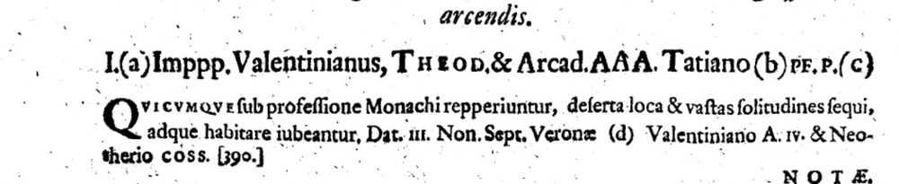
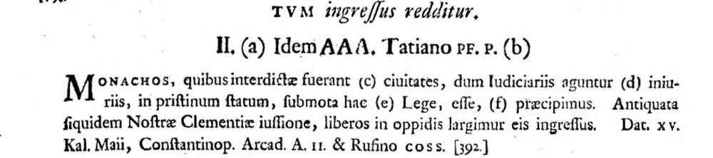

Law 1: “Deserta loca et vastas solitudines” (Verona, 390)
Latin: Leipzig 1743, vol. VI.1, p. 106, scan. Heading: “Theodosii Magni lex de Monachis civitatum ingressu arcendis” (“Law of Theodosius the Great keeping monks out of the cities”). Highlighted: Lecky’s quotation.

The Emperors Valentinian, Theodosius and Arcadius, Augusti, to Tatianus, praetorian prefect.
Whoever are found under the profession of monks are to be ordered to seek out and live in desert places and vast solitudes. Given at Verona on the third day before the Nones of September [3 September], in the fourth consulship of Valentinian Augustus and the consulship of Neoterius [390].
Original Latin
Imppp. Valentinianus, Theod. et Arcad. AAA. Tatiano pf. p.
Quicumque sub professione monachi repperiuntur, deserta loca et vastas solitudines sequi adque habitare iubeantur. Dat. III Non. Sept. Veronae, Valentiniano A. IV et Neoterio coss. [390.]
Gothofredus’s commentary (p. 107) quotes Jerome to the same effect, “if you wish to be what you are called, a monk, that is, one alone, what are you doing in cities?”, and explains the law by the monks’ audacia in Syria, where bands of them thrust themselves into public business and interfered with the courts “under the pretext of humanity or piety”, and destroyed pagan temples: he cites Libanius’s speech For the Temples. He adds that about three years before, in 387, in the riot of the statues at Antioch, crowds of monks had interceded for the accused. (Commentary summarised from the image; not transcribed in full.)
Law 2: the ban withdrawn (Constantinople, 392)
Latin: Leipzig 1743, vol. VI.1, p. 108, scan. Heading: “Theodosii M. lex, qua antiquata superiore lege, Monachis civitatum ingressus redditur” (“Law of Theodosius the Great by which, the previous law being repealed, entry to the cities is given back to the monks”).

The same Augusti to Tatianus, praetorian prefect.
We command that the monks, to whom the cities had been forbidden while they were being harassed by judicial wrongs, be restored to their former state, this law being removed. For the order of Our Clemency being repealed, we grant them free entry into the towns. Given at Constantinople on the fifteenth day before the Kalends of May [17 April], in the second consulship of Arcadius Augustus and the consulship of Rufinus [392].
Original Latin
Idem AAA. Tatiano pf. p.
Monachos, quibus interdictae fuerant civitates, dum iudiciariis aguntur iniuriis, in pristinum statum, submota hac lege, esse praecipimus. Antiquata siquidem Nostrae Clementiae iussione, liberos in oppidis largimur eis ingressus. Dat. XV Kal. Maii, Constantinop. Arcad. A. II et Rufino coss. [392.]
The clause dum iudiciariis aguntur iniuriis is obscure; Gothofredus discusses three possible senses, and the rendering here is tentative. At the end of his commentary on law 1 (top of p. 108, read in the OCR) he writes: “But some twenty months later the same Theodosius recanted this law by the law immediately following, in the year 392 … From which it appears how temporary laws of this kind were, made for the needs of the moment, and indeed at the pleasure of the princes.” Neither law was taken into Justinian’s Code (Gothofredus’s note (a) to law 2: “absent from the Justinian Code, as a temporary law”).
Further down the rabbit hole
Sources that Lecky cites in the notes next to the ones that cite this page.
- Rio, De l’art chrétienHow oil painting reached Italy, and why its bringer preferred Venice
- Ciampini, Vetera monimentaThe saint’s halo: a sign of eternity, or a shield against pigeons?
- Ford, A Handbook for Travellers in SpainThe Alhambra as a tent turned to stone, and the sculptor who prayed before he carved
- Didron, Iconographie chrétienneHow medieval art pictured Christ the Judge
- Agobard, Liber de imaginibusLecky’s five Agobard quotes checked against Baluze
- Aquinas, Summa theologiae, Supplement, q. 94Lecky’s quotation that is really a paraphrase


Backlinks
Every place in Rationalism in Europe that links to this page (generated automatically when the site is built).
- Chapter III: note 67